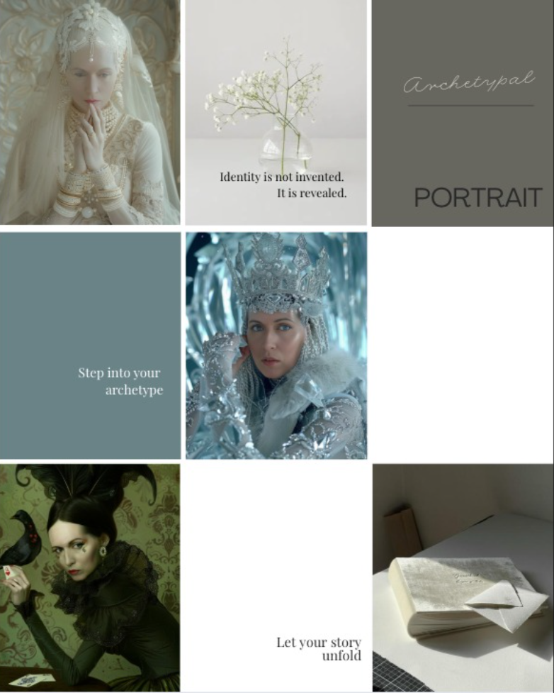
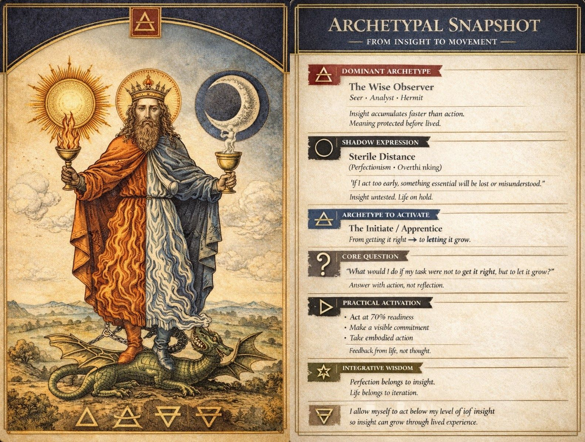

The Archetypal Reading
Meet the inner figures running your life, and leave with three artifacts to remember them by.
This is for you if you keep circling the same questions, about direction, about work, about who you are underneath the roles you play, and analysis alone hasn't answered them. You don't need to know anything about Jung. You need ninety minutes, honesty, and a little curiosity about the parts of you that don't fill in forms.
What are archetypes?
Archetypes are universal inner patterns that shape the way we feel, act, and relate to the world. Each of us carries a unique constellation of these forces within us, and we draw on them in different moments of life: caring for a child, we may embody the Caregiver; pitching an idea, the Warrior; stepping into unfamiliar territory, the Explorer.
To understand your archetypal mix is to understand yourself more deeply, why you move through life as you do, where your natural strengths lie, what kind of work or way of life is truly aligned with you, and which inner gift is waiting to be claimed. It also helps illuminate the tensions within: the conflicting forces that may pull you in different directions or keep certain parts of you hidden.
This method combines reflective enquiry, story exploration, association tests, and coaching with artworks.
The three artifacts

The Archetypal Map
A detailed chart of your inner constellation, the forces at play, where they support you, and where they pull against each other.

The Snapshot Card
Your constellation distilled onto a single card, a visual reference you can return to whenever a decision needs it.
The Fantasy Portrait
A fine art portrait of the archetype most alive in you right now. More than an artwork, a mirror of what the session revealed.
The ninety minutes, step by step
The intake
A short questionnaire before we meet: what you're navigating, what's calling, what you keep postponing.
The session
Ninety minutes, on Zoom or in person in Singapore. Reflective enquiry, story exploration, association work with artworks.
The Map & Snapshot
Within a week you receive your detailed Archetypal Map and your Snapshot card.
The Portrait
We speak about which archetype wants to be seen, then your Fantasy Portrait is created and delivered.
After a Reading
I came into my Archetypal Reading session with Anne-Kristin curious but unsure what to expect, and left genuinely amazed at the depth of what she’d surfaced through a 90-minute conversation. Her method is unlike a typical coaching or counselling session, where you’re asked to articulate what you think and feel and arrive at your own answers. Anne’s approach moves through movies, stories, imagery and active imagination (Jungian style), and somehow, through that, she reaches the deepest parts of you without ever asking you to perform the insight yourself.
What struck me most was how safe I felt with her. She holds the space in a way that made me willing to be open without effort: there was no sense of being analysed or assessed, just a quiet, attentive presence that let me say what was actually true.
The archetypal snapshot she produced afterwards mirrored themes I recognise from my own astrology chart, yet she arrived there through a completely different method. As someone who works with archetypes myself, I don’t say that lightly.
If you’re drawn to inner work and want to be met with care and real skill, I’d recommend Anne without hesitation.
I had the opportunity to experience Anne’s consultation process recently, and it was unlike anything I’ve encountered before. Grounded in Jungian principles, she engages in a thoughtful conversation, then translates her insights into a clear articulation of your core archetypes.
What makes this experience truly special is how Anne brings those insights to life through a custom portrait. It feels both deeply personal and creatively powerful.
I walked away not only with a beautiful piece of art, but with a deeper understanding of myself and a genuine appreciation for her unique approach.
I would highly recommend Anne to anyone seeking a meaningful intersection between self inquiry and artistic expression.
I had a beautiful Archetypal session with Anne and truly enjoyed the experience. She is deeply knowledgeable, experienced, and incredibly skilled at what she does.
What I especially loved is that it goes beyond traditional coaching, incorporating active imagination to access deeper layers. Anne guided me deep within, where I received some powerful visions and insights.
It was a beautiful, meaningful and insightful experience. I highly recommend experiencing a session with Anne.
I recently had an Archetypal Reading with Anne, truly not knowing what to expect. I was really surprised at how easy and fun I found the session, it didn’t feel forced, it felt quite playful actually and to my surprise even I could see myself revealing certain patterns as we spoke. The method she uses flows very nicely and the resulting report is really insightful. I can see how I might use this to guide me in certain aspects of life.
All-inclusive: the 90-minute session, the Archetypal Map, the Snapshot card, and your Fantasy Portrait.
Zoom worldwide or in person in Singapore · English, German, or Italian.
The Reading is also included in the Deep Dive Package, together with three follow-up coaching sessions.
Questions, answered
No, it is coaching that uses Jungian methods. If therapy is what you need, I'll say so and point you well.
Nothing at all. That's my job.
A test describes you from the outside. A Reading engages the parts of you that don't fill in forms, through story, association, and image.
Either, Zoom worldwide, or in person in Singapore.
We speak before it's finalised. Nothing ships that doesn't feel true.
Yes. Message me on WhatsApp or through the Let's Connect page and we'll find a time for the Reading.
English, German, and Italian.
Free with 24 hours' notice.